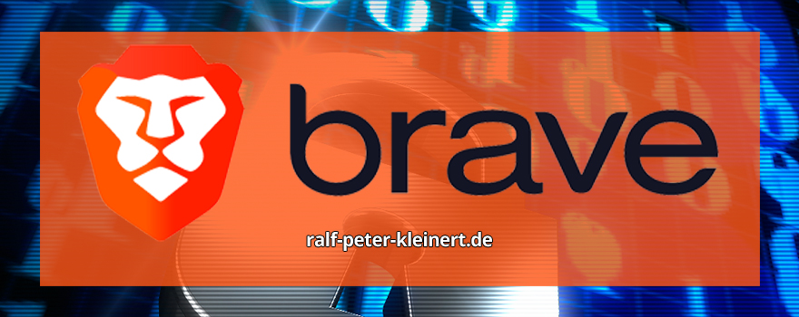

Inhalte des Artikels Brave der sichere Browser
Meine lieben Leserinnen und Leser. Es ist ja nicht zu übersehen, dass ich mich vorwiegend mit Computersicherheit beschäftige. Heute möchte ich Ihnen einen klasse Browser vorstellen, den ich auf Herz und Nieren getestet habe und auf den ich schlussendlich umgestiegen bin. Ich war bisher Nutzer von Firefox und liebe diesen Browser eigentlich. Nur habe ich ein Problem damit, wenn beim Synchronisieren meine Passwörter und Daten auf entfernten Servern liegen. Ich fühle mich schlicht nicht wohl, wenn ich weiß, dass meine Daten da irgendwo gespeichert sind. Hacker werden immer besser und kommen selbst in große Tech-Firmen rein. Nee, das ist mir nichts mehr. Dann gab es auch noch ein Urteil gegen Google, und wenn das rechtskräftig wird, weiß ich nicht, wie Mozilla sich halten und finanzieren soll. Ist mir alles zu unsicher. Deshalb stelle ich heute Brave vor.
Hier kann Brave heruntergeladen werden.
Ich habe Brave bei mir ganz bewusst unter dem Thema Sicherheitsanbieter eingeordnet. Brave ist nicht einfach nur ein Browser; es ist ein Anbieter, der Sicherheit und Privatsphäre konsequent in den Mittelpunkt stellt. Während viele Browser sich auf Geschwindigkeit oder Funktionalität fokussieren, geht Brave einen anderen Weg: Die Entwickler haben eine Plattform geschaffen, die Sicherheit großschreibt und gezielt Funktionen integriert, die Ihre Daten schützen.
Mit Brave bekomme ich Schutzmechanismen, die weit über das hinausgehen, was herkömmliche Browser bieten. Da wären zum Beispiel Brave Shields, die nicht nur Werbung blockieren, sondern auch Tracker und unerwünschte Skripte fernhalten, die im Hintergrund versuchen, Daten abzugreifen. Auch Brave Sync überzeugt durch eine Lösung, die mir als Nutzer die volle Kontrolle über meine Synchronisation lässt, ohne dass Daten auf zentralen Servern landen. Gerade in Zeiten, in denen Datensicherheit immer mehr zur Herausforderung wird, schätze ich es sehr, einen Browser zu nutzen, der mir die Kontrolle über meine Daten zurückgibt und mich nicht dem Risiko von Datensammlern aussetzt.
Für mich ist Brave damit ein klarer Sicherheitsanbieter, der den Datenschutz nicht nur ernst nimmt, sondern ihn als Grundpfeiler seines Angebots versteht.
Brave ist eine echte Alternative für alle, die ihre Privatsphäre schützen möchten, ohne auf Geschwindigkeit und Komfort zu verzichten. Brave geht weit über die üblichen Werbeblocker hinaus und bietet Funktionen, die gezielt entwickelt wurden, um Ihre Daten zu schützen und Sie vor ungewollter Überwachung zu bewahren. Wer im Netz unterwegs ist und seine Spuren möglichst unsichtbar halten möchte, findet in Brave eine Lösung, die das Beste aus Sicherheit und Geschwindigkeit vereint. Schauen wir uns das mal genauer an.
Die Grundlagen: Worauf basiert Brave und warum?
Brave basiert auf der Chromium-Engine, also der gleichen Grundlage wie Google Chrome. Das bringt gewisse Vorteile in Sachen Geschwindigkeit und Erweiterbarkeit mit sich. Brave ist allerdings in einer Hinsicht einzigartig: Alle Google-bezogenen Dienste und Funktionen wurden entfernt. Stattdessen hat Brave einen klaren Fokus auf Datenschutz und entwickelt immer neue Funktionen, um die Sicherheit der Nutzer zu verbessern. Diese Entscheidung spiegelt die Mission der Entwickler wider, eine sichere, werbefreie Browser-Alternative zu schaffen, die den Nutzern mehr Kontrolle über ihre Daten bietet.
Brave Shields: Der integrierte Schutzschild
Das Herzstück von Brave ist Brave Shields – eine integrierte Funktion, die automatisch Werbung und Tracker blockiert. Hier wird nicht einfach nur Werbung ausgeblendet: Brave schützt Nutzerinnen und Nutzer vor unsichtbaren Skripten, die sonst Informationen über das Surfverhalten sammeln würden. Was Brave Shields auszeichnet, ist die Feinjustierung. Für jede Webseite können die Nutzer individuell festlegen, welche Inhalte blockiert oder zugelassen werden sollen. So wird nicht nur ein Basisschutz geboten, sondern auch die Möglichkeit, ihn an die eigenen Bedürfnisse anzupassen. Webseiten laden so schneller, und die Privatsphäre bleibt intakt.
Brave Rewards: Ein neues Werbemodell
Brave will das klassische Werbemodell umkrempeln, das sonst auf Tracking und Datensammlung basiert. Mit Brave Rewards können Nutzer freiwillig anonymisierte Werbung sehen und dafür sogar Belohnungen erhalten – in Form von Basic Attention Tokens (BAT), einer Kryptowährung, die Brave selbst ins Leben gerufen hat. Die Nutzer haben die Wahl: Werbung, die den Datenschutz respektiert und keine persönlichen Daten speichert, oder ein gänzlich werbefreies Surferlebnis. Die Tokens können später genutzt werden, um Content-Ersteller zu unterstützen oder um, je nach Angebot, die Werbung zu individualisieren. Dieses Modell bietet Nutzern eine faire Wahl, die Kontrolle und Privatsphäre respektiert.
Brave Browser mit extrem sicherer Synchronisation und klasse Datenschutz - das kann kein anderer Browser!
Brave Testbericht von Chip.de hier lesen.
Kostenlose IT-Sicherheits-Bücher & Information via Newsletter
Bleiben Sie informiert, wann es meine Bücher kostenlos in einer Aktion gibt: Mit meinem Newsletter erfahren Sie viermal im Jahr von Aktionen auf Amazon und anderen Plattformen, bei denen meine IT-Sicherheits-Bücher gratis erhältlich sind. Sie verpassen keine Gelegenheit und erhalten zusätzlich hilfreiche Tipps zur IT-Sicherheit. Der Newsletter ist kostenlos und unverbindlich – einfach abonnieren und profitieren!
Hier kommt ein entscheidender Vorteil gegenüber vielen anderen Browsern: Brave Sync. Im Gegensatz zu Browsern, die Nutzerdaten zentral speichern, setzt Brave auf eine verschlüsselte Sync-Kette. Diese Kette erlaubt Ihnen, Daten zwischen Ihren Geräten zu synchronisieren, ohne dass sie auf einem Server gespeichert werden. Über eine Sync-Phrase, eine Art Schlüssel, können Sie Lesezeichen, Passwörter und mehr sicher zwischen Ihren Geräten austauschen, ohne dass dabei etwas auf fremde Server gelangt. So bleiben Ihre Daten auch beim Synchronisieren privat und geschützt.
Brave Sync ist die Lösung von Brave, um Lesezeichen, Passwörter, den Verlauf und andere wichtige Daten über mehrere Geräte hinweg sicher zu synchronisieren. Im Gegensatz zu klassischen Synchronisationsdiensten speichert Brave Ihre Daten jedoch nicht auf zentralen Servern, sondern setzt auf ein System, das ausschließlich zwischen Ihren eigenen Geräten läuft – privat, verschlüsselt und ohne Risiko, dass ein fremder Dienst auf Ihre Daten zugreift. Das bedeutet, dass weder Brave noch jemand anderes Ihre Daten sehen kann. Alles bleibt unter Ihrer Kontrolle.
Der Kern von Brave Sync: Die Sync-Kette
Das Herzstück der Brave Sync-Technologie ist die sogenannte Sync-Kette. Brave erstellt beim Einrichten der Synchronisation eine Sync-Phrase, die aus einer zufällig generierten Folge von Wörtern besteht. Diese Sync-Phrase ist wie ein privater Schlüssel, der Ihre Geräte miteinander verbindet. Jedes Gerät, das Sie synchronisieren möchten, wird durch diese Phrase zur Sync-Kette hinzugefügt und erhält so Zugriff auf die synchronisierten Daten. Die Phrase dient dabei als sicherer Zugang, der die Übertragung Ihrer Daten ermöglicht, ohne dass diese auf einem zentralen Server gespeichert werden.
Ende-zu-Ende-Verschlüsselung: Datensicherheit auf allen Geräten
Brave Sync nutzt Ende-zu-Ende-Verschlüsselung, was bedeutet, dass Ihre Daten auf dem ersten Gerät verschlüsselt werden und nur auf dem Zielgerät wieder entschlüsselt werden können. Die Sync-Phrase dient als Schlüssel für diese Verschlüsselung und sorgt dafür, dass Ihre Daten auf allen Geräten in der Sync-Kette sicher und privat bleiben. Selbst wenn die Datenübertragung abgefangen würde, wären sie ohne die Phrase unlesbar.
Ein großer Vorteil ist hier: Brave selbst hat keinen Zugriff auf die Sync-Daten, da sie weder auf Servern gespeichert noch zwischengelagert werden. Die Daten werden nur zwischen den Geräten übertragen und bleiben damit vollständig privat. Das bietet Ihnen eine Synchronisationslösung, die von Grund auf sicher gestaltet ist.
Schritt-für-Schritt: Brave Sync einrichten
Was wird synchronisiert und wie bleibt es geschützt?
Brave Sync ermöglicht die Synchronisierung von:
Alle Daten sind dank der Sync-Kette verschlüsselt. Ohne die Sync-Phrase können die synchronisierten Daten weder angesehen noch verändert werden, sodass Sie die vollständige Kontrolle behalten.
Brave Sync im Vergleich zu klassischen Cloud-Speicherlösungen
Im Gegensatz zu Cloud-basierten Speicherlösungen, bei denen Daten oft auf den Servern des Anbieters landen, hält Brave Ihre Daten lokal und synchronisiert sie direkt zwischen den Geräten. Diese dezentrale Speicherung macht Brave Sync zu einer guten Wahl für alle, die Sicherheits- und Datenschutzbedenken gegenüber zentralisierten Datenspeichern haben. Da kein externes Backup erforderlich ist, entfallen Risiken wie ein unbefugter Zugriff durch den Anbieter selbst oder durch Cyberangriffe auf zentrale Server.
Was tun, wenn ein Gerät verloren geht?
Falls Sie ein Gerät verlieren oder die Synchronisation zurücksetzen möchten, können Sie die Sync-Kette jederzeit löschen und neu erstellen. Da Brave keine Daten zentral speichert, sind Ihre anderen Geräte weiterhin sicher. Die Sync-Phrase bleibt Ihr Zugangsschlüssel; ohne sie ist kein Zugriff möglich. Brave stellt damit eine robuste und benutzerfreundliche Lösung für die Synchronisation dar, die Ihre Daten jederzeit unter Ihrer Kontrolle hält. Weitere Infos zu verlorenen Geräten.
Brave Sync als Datenschutzlösung für den Alltag
Brave Sync bietet eine Synchronisationsmethode, die optimal auf Datenschutz ausgelegt ist. Alle Daten bleiben privat, verschlüsselt und unter Ihrer alleinigen Kontrolle – genau das, was man von einer modernen Synchronisationslösung erwartet. Wenn Ihnen Privatsphäre und Datensicherheit beim Surfen wichtig sind, ist Brave Sync eine hervorragende Wahl, die Ihnen ermöglicht, alle wichtigen Browserdaten sicher und komfortabel zwischen Ihren Geräten zu teilen.
Für mich sind Tracker und andere Datenschutz-Features nicht ganz so wichtig. Ich nutze ein VPN und installiere in meinen Browsern zusätzlichen Tracking-Schutz und ähnliche Tools. Für mich zählt vor allem eines: dass meine Browserdaten in keiner Cloud gespeichert werden. Das bietet mir Brave, und genau deshalb nutze ich ihn. Der Rest – wie das Blockieren von Trackern und Werbung – ist zwar nützlich, aber nicht entscheidend. Solche Dinge lassen sich auf anderen Wegen lösen, aber die Daten lokal zu halten, das ist für mich das A und O.
Passwörter sind oft die Achillesferse der Internetsicherheit, und Brave weiß das. Deshalb unterstützt der Browser Passkeys und funktioniert reibungslos mit Passwort-Managern. Passkeys bieten eine moderne, sichere Möglichkeit zur Anmeldung, die klassische Passwörter ersetzt. Der Vorteil? Die privaten Schlüssel bleiben immer auf Ihrem Gerät und verlassen es nie. Wenn Sie weiterhin Passwörter verwenden möchten, bietet Brave einen eigenen Passwort-Manager oder die Integration von Erweiterungen wie Bitwarden, um Ihre Daten sicher zu verwalten.
Falls Sie wie ich gerne Facebook auf Abstand halten, bietet Brave hier ebenfalls Schutz. Während Firefox mit dem Facebook Container arbeitet, setzt Brave auf die Kombination aus Shields und dem Blockieren von Drittanbieter-Cookies. Alternativ können Sie Facebook auch in einem separaten Brave-Profil nutzen, das wie ein Container funktioniert und verhindert, dass Facebook Ihr Verhalten außerhalb der Plattform verfolgt. Das Ergebnis? Schutz, der funktioniert, ohne die Nutzbarkeit einzuschränken.
Ein verlorenes oder gestohlenes Gerät ist immer ein Sicherheitsrisiko, vor allem, wenn darauf wichtige Zugänge wie Passwörter gespeichert sind. Die Daten darauf sind im schlimmsten Fall gefährdet, besonders wenn auf dem Gerät eine Browser-Synchronisation eingerichtet ist. Wer in so einer Situation vorsorgen möchte, kommt nicht umhin, die Zugänge zu wichtigen Diensten zu ändern – und zwar für jeden einzelnen Dienst. Egal, ob Sie Brave oder einen anderen Browser verwenden, hier finden Sie hilfreiche Schritte und Vorsichtsmaßnahmen, um Ihre Daten im Fall eines Verlustes zu schützen.
1. Zugänge ändern: Der wichtigste Schritt zur Schadensbegrenzung
Wenn ein Gerät abhandengekommen ist, auf dem Zugangsdaten gespeichert sind, gibt es nur eine sichere Lösung: Ändern Sie die Passwörter für alle wichtigen Dienste. Denken Sie dabei an E-Mail-Konten, soziale Netzwerke, Banking-Apps und alle anderen sensiblen Zugänge. Auch wenn es aufwendig klingt, ist dies der effektivste Weg, um sicherzustellen, dass niemand mit den alten Zugangsdaten auf Ihre Konten zugreifen kann.
Ratsam ist es, bei dieser Gelegenheit auch Zwei-Faktor-Authentifizierung (2FA) zu aktivieren, sofern sie verfügbar ist. 2FA schützt Ihre Konten zusätzlich, da ein Zugriff nur dann möglich ist, wenn ein zweiter Faktor (etwa ein Code auf einem anderen Gerät) bestätigt wird.
2. Achten Sie auf Ihre Geräte wie auf Ihren Augapfel
Verlorene oder gestohlene Geräte sind ein Risiko, das sich am besten vermeiden lässt, indem man Vorsichtsmaßnahmen trifft. Achten Sie darauf, wo Sie Ihre Geräte aufbewahren und lassen Sie sie nicht unbeaufsichtigt liegen, insbesondere in öffentlichen oder unsicheren Umgebungen. Ein gesicherter Ort oder eine Tasche mit separatem, sicheren Fach hilft schon viel. Überlegen Sie zudem genau, mit welchen Geräten Sie eine Synchronisation einrichten. Nicht jedes Gerät muss Zugang zu all Ihren Daten haben.
3. „Find My Device“ einrichten und aktiv halten
Ein weiteres wichtiges Hilfsmittel ist eine Geräte-Ortungsfunktion wie Find My Device für Android oder Find My iPhone für iOS. Damit können Sie ein verlorenes oder gestohlenes Gerät orten, sperren oder im besten Fall komplett löschen. Diese Funktion kann oft den entscheidenden Unterschied machen, um Ihre Daten im Ernstfall zu schützen, da Sie mit einem Mausklick alles auf dem Gerät löschen können, einschließlich gespeicherter Browserdaten wie Passwörter und Verlauf. Achten Sie darauf, diese Funktionen aktiviert zu lassen und stets ein aktuelles Gerät als Wiederherstellungsoption zu hinterlegen.
Google hat sich bei der Entwicklung von Android sehr stark auf Sicherheit ausgerichtet. Find My Device ist eine fantastische Funktion, die Google hier geschaffen hat, und sie gehört zu den wichtigsten Schutzmaßnahmen, die Sie auf Ihrem Android-Gerät einrichten können. Aktivieren Sie diese Funktion unbedingt – im Verlustfall haben Sie damit die Möglichkeit, das Gerät aus der Ferne unschädlich zu machen, sobald es eine Internetverbindung aufbaut. Ob Sie es orten, sperren oder sogar alle Daten löschen möchten: Find My Device gibt Ihnen die nötige Kontrolle. Sie können das Gerät praktisch unbrauchbar machen und so verhindern, dass Unbefugte auf Ihre Daten zugreifen. Informieren Sie sich am besten gleich hier im Netz, wie Sie diese Funktion optimal nutzen und aktivieren Sie sie – es ist ein entscheidender Schritt zu mehr Sicherheit!
4. Sync-Konten und Cloud-Speicher kontrollieren
Bei Browsern wie Brave, die eine Sync-Kette nutzen, können Sie die Synchronisation auf den verbliebenen Geräten zurücksetzen, sodass das verlorene Gerät keine weiteren Aktualisierungen erhält. Auch wenn die Sync-Daten dadurch nicht auf dem verlorenen Gerät gelöscht werden, verhindert dies, dass neue Daten nach dem Verlust synchronisiert werden. Wenn Sie einen Cloud-Speicher nutzen, ist es ratsam, das verlorene Gerät dort abzumelden oder den Zugriff über das Cloud-Konto zu sperren.
Denken Sie daran: Brave oder Chrome – bei allen Browsern gilt, dass die Synchronisationsdaten nur dann wirklich sicher sind, wenn Sie wissen, wo sie gespeichert und wie sie geschützt sind.
5. Sicherheitsbewusstsein für alle Geräte schärfen
In unserer vernetzten Welt sind die Geräte wie Schlüssel zu unserem digitalen Leben. Daher sollte jedes Gerät, das auf sensible Daten zugreifen kann, wie ein Tresor betrachtet werden. Vermeiden Sie es, unnötig viele Geräte mit allen Daten zu synchronisieren, und aktivieren Sie auf jedem Gerät eine sichere Bildschirmsperre. Zudem lohnt es sich, in regelmäßigen Abständen die Sicherheitsoptionen und Passwörter zu überprüfen und anzupassen.
Achtsamkeit und Vorsicht sind der beste Schutz
Sichere Geräte sind ein Ergebnis von Bewusstsein und guten Gewohnheiten. Schützen Sie Ihre Geräte, als wären sie Ihr Augapfel, und bedenken Sie, dass ein verlorenes Gerät oft weniger eine Frage von Technik, sondern von Verantwortung ist. Planen Sie für den Fall des Verlusts vor und überlegen Sie, welche Daten auf welchen Geräten wirklich erforderlich sind. Wer frühzeitig auf Sicherheit setzt, minimiert das Risiko, Opfer eines Datendiebstahls zu werden und hat die Kontrolle, auch wenn ein Gerät verloren geht.
Über den Autor: Ralf-Peter Kleinert
Über 30 Jahre Erfahrung in der IT legen meinen Fokus auf die Computer- und IT-Sicherheit. Auf meiner Website biete ich detaillierte Informationen zu aktuellen IT-Themen. Mein Ziel ist es, komplexe Konzepte verständlich zu vermitteln und meine Leserinnen und Leser für die Herausforderungen und Lösungen in der IT-Sicherheit zu sensibilisieren.
Aktualisiert: Ralf-Peter Kleinert 01.11.2024